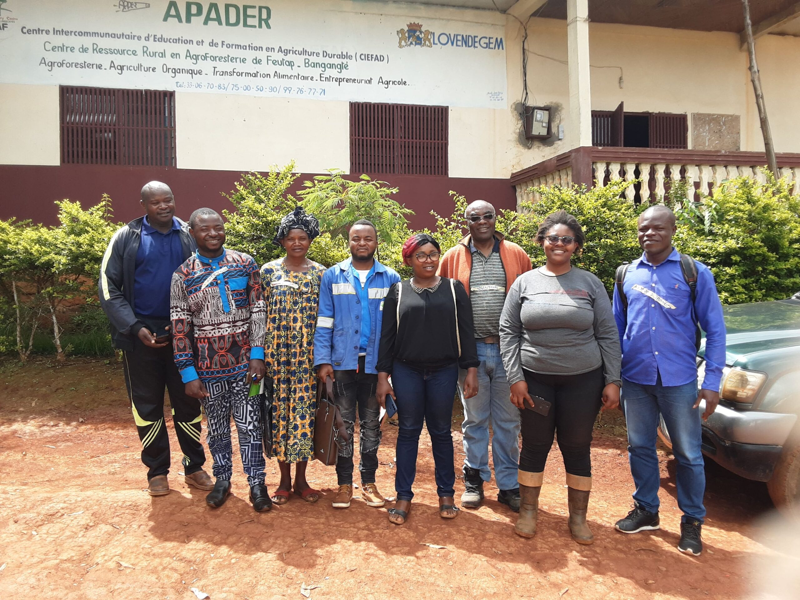
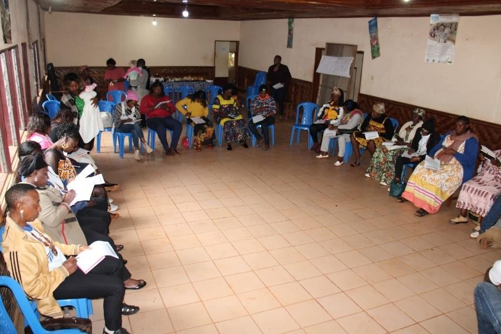
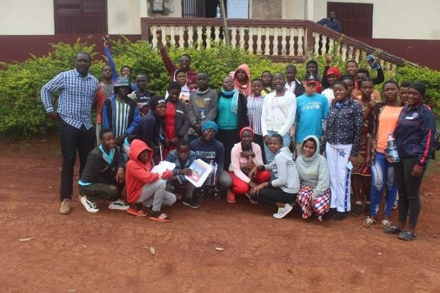

Fraunces
Aa Éé
Àà Ââ Çç Èè Œœ · 0123456789
Pour les grands titres, les titres de section et les citations qui donnent le ton.
Portail institutionnel Direction artistique
Explorez les couleurs, les typographies, les motifs et les composants proposés pour le futur portail de l’APADER. Leurs mises en situation permettent de valider une direction visuelle cohérente.
Support de présentation pour la validation de l’identité visuelle.

Explorer le moodboard
La palette APADER
À partir du vert et du jaune du logo, cette palette associe des tons profonds et des fonds clairs. Elle donne au portail des repères pour valoriser les actions de l’APADER, organiser les contenus et guider la lecture.
Cliquez sur une couleur pour copier son code.
Des fonds clairs pour la lecture, des tons profonds pour les temps forts et une touche de jaune pour inviter à agir.
Des teintes complémentaires pour les textes secondaires, les séparations et les messages qui accompagnent les formulaires.
Les typographies APADER
PP Eiko est prévue pour les titres et les citations du futur portail. Dans ce moodboard, les exemples de titres sont affichés en Fraunces. IBM Plex Sans est utilisée pour les textes et l’interface.
Aa Éé
Àà Ââ Çç Èè Œœ · 0123456789
Pour les grands titres, les titres de section et les citations qui donnent le ton.
Aa Éé
Àà Ââ Çç Èè Œœ · 0123456789
Pour les paragraphes, la navigation, les boutons et les champs de formulaire.
Changez de police pour comparer le même texte, à taille égale.
Éclairer les idées.
Faire grandir les projets.
Fraunces · Regular 400 · Titres et citations
Du premier titre aux légendes, chaque niveau a sa place. Les tailles s’adaptent aux écrans pour préserver la lisibilité.
Cultiver l’avenir.
Agir ensemble.
Des initiatives de terrain
Des actions au plus près des communautés.
Découvrez les projets de l’APADER, les initiatives portées sur le terrain et les ressources partagées avec les communautés.
Agriculture durable et agroforesterie
Les composants APADER
Cartouches de section, boutons et liens composent les repères du portail. Leurs formes, leurs couleurs et leurs réactions restent cohérentes pour faciliter la navigation et accompagner chaque démarche auprès de l’APADER.
Le cartouche officiel identifie chaque section et s’adapte au fond de la page.
Nos actions
Nos actions
Nos actions
Nos actions
La couleur se révèle de droite à gauche, puis le carré apparaît en haut à gauche.
Même forme et même animation sur les pages de l’APADER.
Formes et surfaces
Arrondis, bordures et espacements organisent les contenus du portail APADER. Les champs, les statuts et les réponses dépliables prolongent ces repères pour guider la lecture et faciliter les démarches.
Quatre arrondis à comparer sur une même carte du CIEFAD.
Un lieu pour apprendre
et entreprendre.
Arrondi affiché : 24 px.
Des repères discrets pour distinguer les blocs et garder un rythme de lecture.
Une ligne fine sépare les contenus et délimite les panneaux.
1 px · #CAD5C7
Un relief léger accompagne le survol des éléments interactifs.
Une trame de 8 px règle les écarts entre les contenus.
8 · 16 · 24 · 32 · 48 · 80 px
Un libellé clair, un message précis et des informations faciles à déplier accompagnent les parcours de contact et de participation.
Saisissez une adresse puis utilisez la flèche pour observer la validation du champ.
Le statut indique l’avancement d’un projet. Le type précise la nature d’une activité.
Les informations utiles pour préparer une participation ou retrouver les ressources de l’APADER.
La fiche de chaque formation précisera le public concerné, les dates et les modalités de participation.
Le centre de téléchargement réunira les rapports, guides, études et supports de formation publiables.
Le mouvement APADER
Sur le portail APADER, le mouvement accompagne les contenus et rend les interactions plus lisibles. Les animations restent brèves, se jouent au moment utile et respectent les préférences de chaque visiteur.
Rejouez les trois effets à vitesse normale ou ralentie pour en apprécier les détails.
Nos actions
Le fond du cartouche se révèle de droite à gauche, puis le carré apparaît en haut à gauche. Ce repère accompagne l’entrée dans une section.
Fond : 600 ms · carré : 120 msAu plus près
des communautés.
Le soulignement se déploie à l’apparition d’une expression clé, puis reste en place pendant la lecture.
Soulignement : 600 msDes savoirs.Des perspectives.
Les deux lignes apparaissent successivement avec un déplacement court, pour accompagner l’arrivée d’un nouveau contenu.
Entrée : 520 ms · décalage : 90 msDurées indiquées à vitesse normale. Chaque effet se joue une fois à son apparition et peut être rejoué ici.
La préférence de mouvement réduit est respectée. Les contenus et les commandes restent accessibles, avec ou sans animation.
L’image et le terrain
Les photographies donnent à voir les lieux, les échanges et les personnes qui participent aux actions de l’APADER. Des couleurs naturelles, des cadrages ouverts et des légendes précises donnent du contexte aux contenus du portail.
Le CIEFAD à Feutap, lors d’une visite de groupe.
Des vues d’ensemble pour présenter les structures et leur environnement.

Un atelier de communication non violente.
Des scènes d’activité pour rendre visibles les échanges et la participation.

Des participantes et participants réunis lors d’une activité APADER.
Des portraits de groupe pour donner une place aux personnes et aux liens.
Les motifs APADER
Angles, Halo, Faisceaux et Filament composent la famille graphique retenue pour le portail. Découvrez leur utilisation discrète sur le mot de la coordonnatrice, un appel à agir et le pied de page du portail.
Pour chaque motif, changez de section avec les flèches ou les boutons. Sur mobile, vous pouvez aussi faire glisser l’aperçu.
Des pans géométriques pour cadrer les temps forts et souligner les coins des sections.
1 / 3 · Le mot de la coordonnatrice
Des arcs amples pour accompagner les contenus et évoquer la diffusion de la lumière.
1 / 3 · Le mot de la coordonnatrice
Des plans qui s’ouvrent pour donner une direction aux compositions et aux appels à agir.
1 / 3 · Le mot de la coordonnatrice
Une ligne continue et des retours souples pour relier les contenus avec discrétion.
1 / 3 · Le mot de la coordonnatrice
Une direction, un langage commun
Accueil, actions, projets, structures ou publications : les mêmes couleurs, les mêmes repères et une même attention à la lecture.
Revenir au début